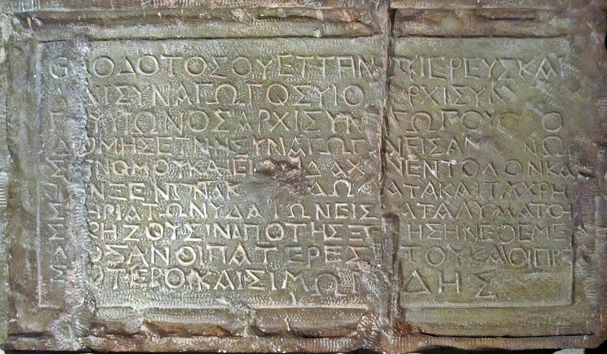

Theodotus Synagogue Inscription

- Find Name
- Theodotus Synagogue Inscription
- Historical Period
- Roman
- Artifact Date
- c. AD 1-70
- Date Discovered
- 1913
- Discovery Location
- City of David, Jerusalem, Israel
- Current Location
- Rockefeller Archaeological Museum, Jerusalem, Israel
- Timeline Era
- Life of Christ
- Description
- A Greek synagogue dedication by 'Theodotus son of Vettenus, priest and ruler of the synagogue,' recording that his ancestors built the synagogue for reading the Law, teaching the commandments, and hosting travellers from abroad. It was found in a cistern in the City of David.
- Biblical Significance
- This is the earliest known synagogue inscription from Jerusalem, proving a Greek-speaking synagogue served pilgrims in the city before AD 70, much like the Synagogue of the Freedmen in Acts 6. It shows the world of synagogue teaching in which Jesus taught and Paul debated was vibrant in Jerusalem itself.
- Evidence Class
- Contextual
- Interpretations
- Scholars agree the inscription records a Jerusalem synagogue built by Theodotus before AD 70; it shows synagogues with guest rooms and water installations in Jesus’ day.
- Scripture Illuminated
- Related People
- Related Books
- Related Places
- Related Events
Awaiting Review Not yet checked against scholarly sources. Treat its claims as provisional until this entry is reviewed. About verification
Last reviewed: not yet reviewed